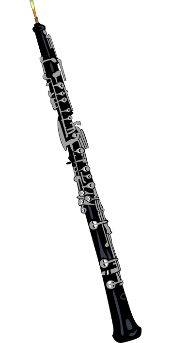

The oboe is a fascinating and challenging musical instrument with a rich history. Here's a summary of key information about the oboe. The oboe is a double reed woodwind instrument. This means sound is produced by blowing air through two thin pieces of cane (the reed) that are tied together. The vibrating reeds cause the air column in the instrument to vibrate, creating the sound. It is a long, slender wooden tube (usually made from grenadilla wood) with metal keys that open and close holes to change pitch. Student models may be made of plastic or resin for durability. A standard oboe is about 65 cm (25½ inches) long. The oboe is the soprano member of the oboe family and is pitched in the key of C. It's known for its distinctive, expressive sound, which can be described as "bright," "lyrical," or even "mournful". The oboe's origins trace back to ancient double-reed instruments like the shawm, dating back as far as 2,800 BC. The immediate ancestor is believed to be the medieval shawm, which had a conical bore and flared bell. The first Baroque oboe (hautbois) was developed in France in the mid-17th century. It was originally used in the French court and quickly gained popularity. The instrument underwent further changes during the Classical period, with a narrower bore and the addition of more keys, expanding its range. The modern oboe evolved further in the 19th and 20th centuries, with improvements to the bore and keywork. Playing the oboe is considered challenging, requiring dedication and regular practice. Key aspects involve developing a proper embouchure (mouth shape for playing) and mastering air control. Many oboists eventually learn to make their own reeds from cane, allowing them more control over the sound and pitch. The oboe is commonly used in orchestras, concert bands, and chamber ensembles. It's frequently heard in classical music, film scores, and sometimes even in jazz or popular music. The oboe holds a special role in the orchestra as the instrument used to tune the entire ensemble to an 'A'. Oboe Family.
